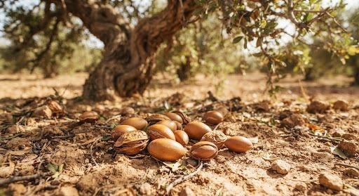

ÉTAPE 01 • RAMASSAGE SOLAIRE
 Forêt protégée du Souss-Massa
Forêt protégée du Souss-Massa
Récolte des fruits d'arganier sauvages
Ramassage respectueux exclusivement au sol une fois que les fruits ont
mûri et chuté naturellement. Le gaulage est formellement banni pour
préserver les rameaux nourriciers et l'intégrité biologique de la canopée de
l'arganier.
